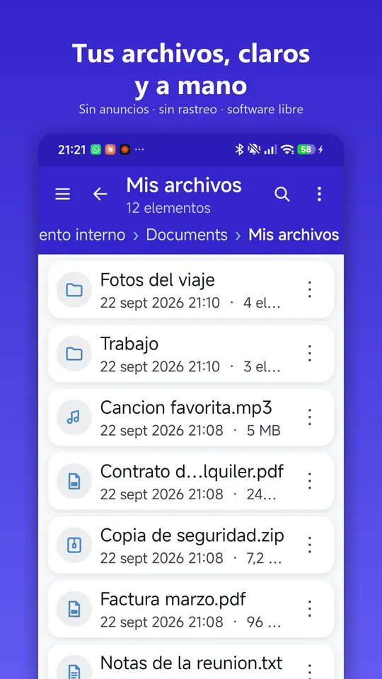
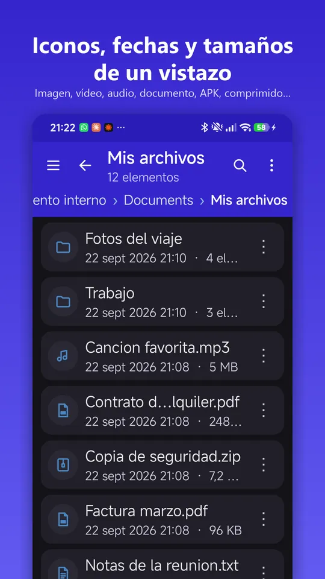
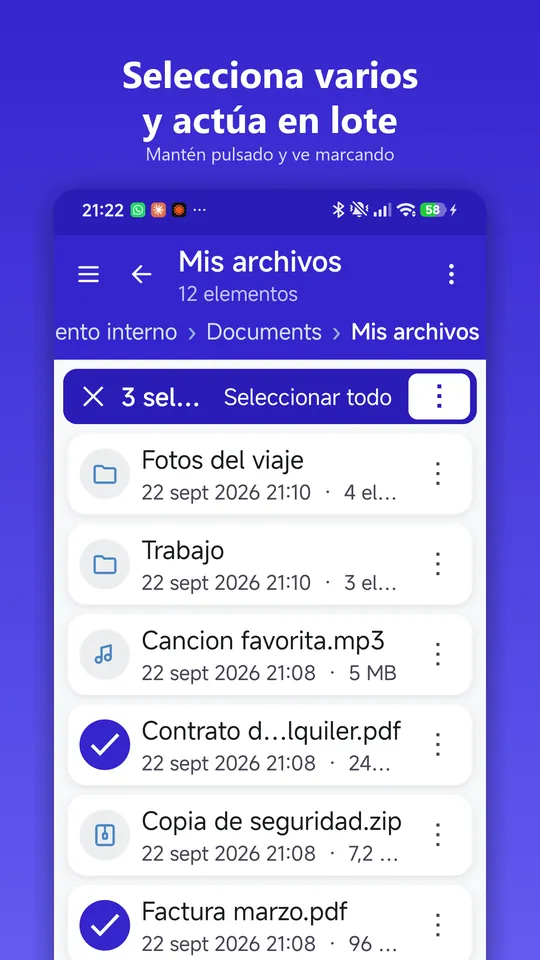
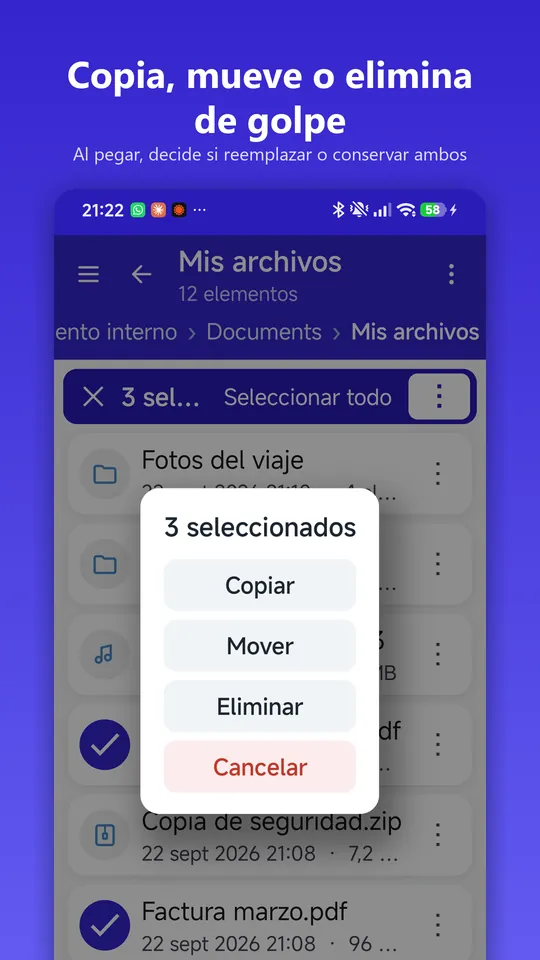

Support · File Manager
How File Manager works, screen by screen, and what every option does.




Top bar:
List:
Floating button:
Selection mode (selection top bar):
Paste bar (appears after Copy or Move):
If there's a newer version: "Update available: A newer version (X) is available. You have Y. Do you want to update?", with Update and Not now.
The all files access permission is missing. Go to Settings › Storage › Open settings and turn on the switch for File Manager.
It's probably Android/data or Android/obb. Since Android 11 the system blocks them for all apps, even with all files access.
You don't have any app installed that can open that format. Install one (for example, a PDF reader or a player) and try again.
Names can't contain \ / : * ? " < > |. There also can't be two items with the same name in the same folder.
You're trying to paste a folder inside itself or one of its subfolders. Choose another destination.
This was fixed in version 2026.08.28. Update to the latest one.
Turn them on in More › Show hidden files or in Settings › Display.
Deleting is permanent: there's no recycle bin. Turn on "Ask before deleting" in Settings so it always asks you for confirmation.
Open an issue on GitHub telling us what's happening, with which version and device.